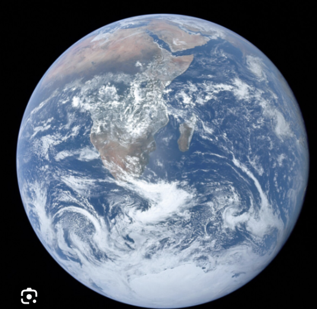
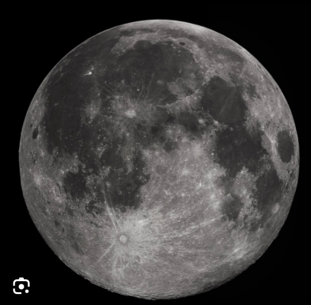
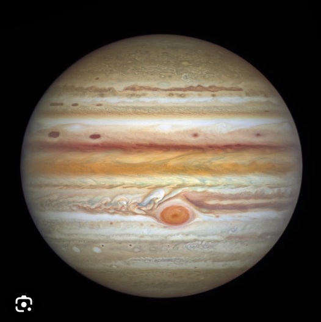

|
Earth |
Moon |
Jupiter |
Uranes |
| My 4 Planets |
 |
 |
 |
 |
| Fact #1 |
Earth is the only known planet that supports life, thanks to its perfect distance from the Sun and abundance of water. |
Around 70% of Earth's surface is covered in water, mostly in the form of oceans. |
Earth has a powerful magnetic field, which protects it from harmful solar radiation. |
The planet takes about 365.25 days to orbit the Sun, which is why we have a leap year every four years. |
| Fact #2 |
The moon is about 4.5 billion years old, forming shortly after the Earth itself. |
The moon has a significant impact on Earth, influencing ocean tides due to its gravitational pull, which affects marine life and ecosystems. |
The moon is slowly drifting away from Earth at a rate of about 1.5 inches (3.8 centimeters) per year, which means it will eventually appear smaller in our sky over millions of years. |
The moon has a thin atmosphere called an exosphere, which is so sparse that it cannot support weather or life as we know it, making it one of the most inhospitable places in our solar system. |
| Fact #3 |
Jupiter is the largest planet in our solar system, with a diameter of about 86,881 miles (139,822 kilometers), making it more than 11 times wider than Earth. |
It has a strong magnetic field, about 14 times stronger than Earth's, and hosts a complex system of rings and at least 79 known moons, including the largest moon in the solar system, Ganymede. |
The Great Red Spot, a massive storm on Jupiter, has been raging for at least 350 years and is so large that three Earths could fit inside it. |
Jupiter's rapid rotation causes it to have an oblate shape, with its equatorial diameter being about 7% larger than its polar diameter. |
| Fact #4 |
Tilted Axis: Uranus has an extreme axial tilt of about 98 degrees, which means it rotates on its side, making its seasonal changes very different from those of other planets. |
Cold Temperatures: It is the coldest planet in the Solar System, with minimum temperatures dropping to around -224 degrees Celsius (-371 degrees Fahrenheit). |
Faint Rings: Uranus is surrounded by a system of faint rings, which are composed of ice particles and dark organic materials, making them difficult to detect. |
Discovery: Uranus was the first planet discovered with the aid of a telescope, by Sir William Herschel in 1781, expanding our knowledge of the Solar System beyond the five visible planets known since ancient times. |